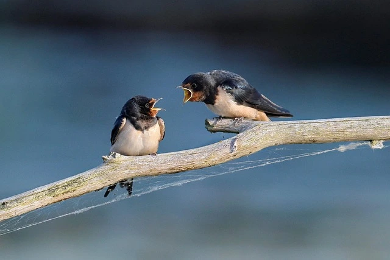

Por que enganchan tanto las relaciones toxicas? La trampa del refuerzo intermitente.
Todos conocemos a alguien.
Esta es la tipica situacion en la que todos conocemos a alguien que esta en una relacion en la que claramente vemos que eso no lleva a ningun lugar, en la que por parte de nuestro amigo o amiga solo escuchamos quejas y pegas sobre la otra persona.
Situaciones en las que no para de hablar sobre dejar a la otra persona, pero nunca termina de ocurrir. Y entonces surge la pregunta, que narices esta haciendo la otra persona para mantener a mi amigo/a ahi? Tendra algun super poder? Es una fiera en la cama? Habre sobreestimado la inteligencia y la capacidad de autoconservacion de mi amigo?
Aunque muchas de estas preguntas pueden tener un si como respuesta, la realidad es un pelin mas compleja, y para comprenderla tenemos que comenzar hablando de ratas (literales, esos roedores tan monos de toda la vida), maquinas tragaperras y psicologos aburridos con ganas de descubrir los principios de la conducta humana.

Por que hacemos lo que hacemos?
Menuda pregunta mas redundante, y sin embargo tambien algo compleja si nos paramos demasiado a pensarla.
La conducta humana ha sido un tema central de estudio de lo mas fascinante desde hace cientos de anos.
Sin embargo, para el tema que nos atane no tendremos que viajar tan atras en el tiempo. En la decada de 1930, el psicologo Edward Thorndike fue uno de los pioneros en el estudio de lo que hoy llamamos condicionamiento operante.
Para establecer las leyes de este tipo de condicionamiento, este senor se le ocurrio la brillante idea de encerrar ratas en cajas, las cuales en su interior contaban con un mecanismo (una especie de palanquita pequenita para ratitas) el cual tras ser accionado otorgaba un refuerzo (comidita para vale ya paro con los diminutivos).
Aqui el tema esta en las variantes de cuando y como se otorgaba este refuerzo:
- Reforzamiento continuo: cada vez que se accionaba el mecanismo se obtenia reforzador. Es decir, siempre que la rata tiraba de la palanca obtenia comida.
- Reforzamiento intermitente: las respuestas solo se ven reforzadas en ocasiones. La rata accionaba la palanca, pero la recompensa llegaba solo a veces.
Estos programas pueden a su vez clasificarse en 2 tipos; de razon (se otorga la recompensa en funcion del numero de respuestas) o de intervalo (la recompensa llega en funcion del tiempo).
Con el fin de simplificar lo maximo posible estos conceptos, no se incidira mucho mas en este articulo sobre los subtipos de razon e intervalo.
Aun asi, es relevante mencionar que normalmente, antes de aplicar un programa de reforzamiento intermitente (se recompensa en ocasiones) se realiza normally el programa de refuerzo continuo con el fin de instaurar la nueva conducta (tirar de la palanca).
A modo de resumen, podemos decir que la conducta humana se rige en gran parte por estos programas de refuerzo (ya que son generalizables a todas las especies animales incluida la humana). Normalmente realizamos conductas que en algun momento nos han aportado o nos aportan consecuencias agradables, mientras que dejamos de hacer cosas que no nos han aportado ningun resultado nunca.
La verdadera eficacia esta en el azar
Por lo que uno podria pensar de primeras, y por logica, si tengo una palanca que me asegura obtener un refuerzo siempre que quiera seguramente me enganche mas que la que en muchas ocasiones no me lo da verdad?
Pues la triste realidad es que no. Los experimentos con las ratas mostraban que aquellas bajo un programa de refuerzo intermitente (especificamente de razon) realizaban con una frecuencia significativamente mayor la conducta de tirar de la palanca.
No es solo que la accionaran mas, es que lo hacian con mayor intensidad y a mayor velocidad que las querecibian siempre el refuerzo, convirtiendolas en pequenos roedores enganchados a la poderosa droga de presionar una palanquita de metal.
Sabeis quien mas se engancha a presionar palancas o botones de manera compulsiva?
Exacto, los humanos con nuestras siempre presentes maquinas tragaperras, las cuales funcionan mediante un programa de refuerzo intermitente, otorgando a veces premio y a veces no.
Es por esto que en la cultura y sabiduria popular se escucha la frase de "lo peor que puede pasarte es que te toque", ya que habras caido en la trampa del refuerzo intermitente, y buscaras esa satisfaccion con una intensidad mucho mayor en el futuro.
Por lo que volviendo a las relaciones...
Malas noticias, esto que le pasa tanto a las ratas como a nuestro cunado cuando va al bar nos pasa tambien al resto de mortales en numerosas situaciones a lo largo de nuestra vida.
El refuerzo intermitente nos engancha, y mucho. Al final lo que sucede es que el valor reforzante aumenta de una forma muy significativa al no estar siempre presente, y eso nos mola.
Asi que, volviendo al tema de las relaciones interpersonales, lo que suele pasar es que al principio todo es muy bonito, hay muestras de afecto por todas partes, montones de regalos y detalles.
Esto como hemos visto constituiria un programa de reforzamiento continuo, en el que se consigue que las personas adquieran una nueva conducta de manera efectiva (estar con la otra persona porque resulta agradable).
Posteriormente, a medida que pasa el tiempo, esos detalles y muestras de afecto se van espaciando con el tiempo, convirtiendose asi en un programa de refuerzo intermitente y, paradojicamente, enganchando aun mas a los componentes de la pareja, como pobres ratas que no paran de pulsar una palanca hasta que obtienen su recompensa.
Este programa de refuerzo intermitente se suele ver potenciado al incluir conductas desagradables entre medias (por ejemplo discusiones), ya que esto provoca que el valor que se le otorga a los momentos agradables (refuerzos) sea inmensamente mayor.
No perdamos la esperanza
Todo esto parece muy feo, y es que en parte lo es.
Sin embargo es importante matizar y contextualizar. Para empezar, las personas no somos ratas, y nuestro comportamiento es algo mucho mas complejo que el simple hecho de hacer cosas porque nos gustan (y si no que le pregunten al que se levanta a las 6:00 AM a trabajar todos los dias).
Lo explicado anteriormente son las bases de nuestro comportamiento si, pero existen muchos mas factores que determinan el como nos relacionamos con el mundo, como puede ser nuestra historia de relaciones pasadas, nuestros objetivos vitales, nuestros intereses o nuestras preferencias.
El objetivo de este texto no es otro que ofrecer un pilar de informacion con el que poder conocer un poco mas sobre nuestro funcionamiento, pero al final es siempre uno mismo quien puede decidir si esta en una situacion conforme con su vida o si por el contrario se encuentra en un lugar del que le gustaria salir en algun momento.
En caso de necesitar ayuda, desde Seliana Psicologia recomendamos buscar la ayuda de un profesional, alguien que pueda aportar un punto de vista mas objetivo ante situaciones que nos puedan parecer demasiado complejas o que nos sobrepasen, porque todos tenemos derecho a perdernos en algun momento, y todos necesitamos de alguien que nos ayude cuando nos cuesta encontrar una salida ante situaciones desbordantes.